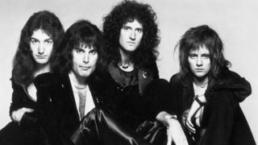

Queen
Banda britanica de Rock formada en 1970 en Londres

Integrantes del grupo
Brian May
Freddie Mercury
John Deacon
Roger Taylor
Discografia
Grandes Exitos de Queen
Año
Disco
1975
A night at the Opera
1986
A Kind of Magic
1989
The Miracle
"A kind of Magic" fue el álbum más exitoso.
Sitio Web Oficial
www.queenonline.com